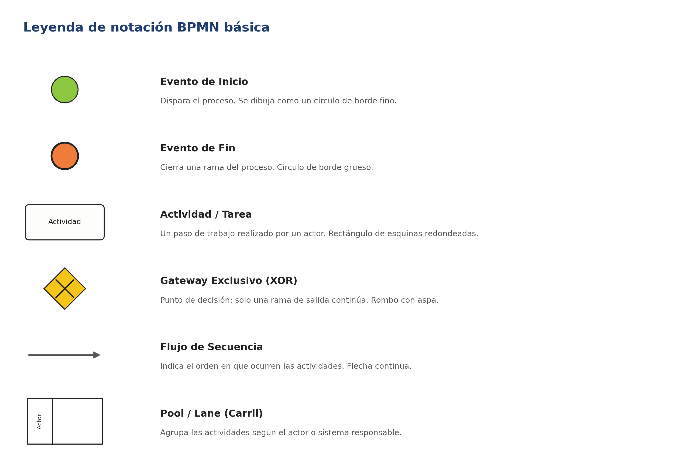
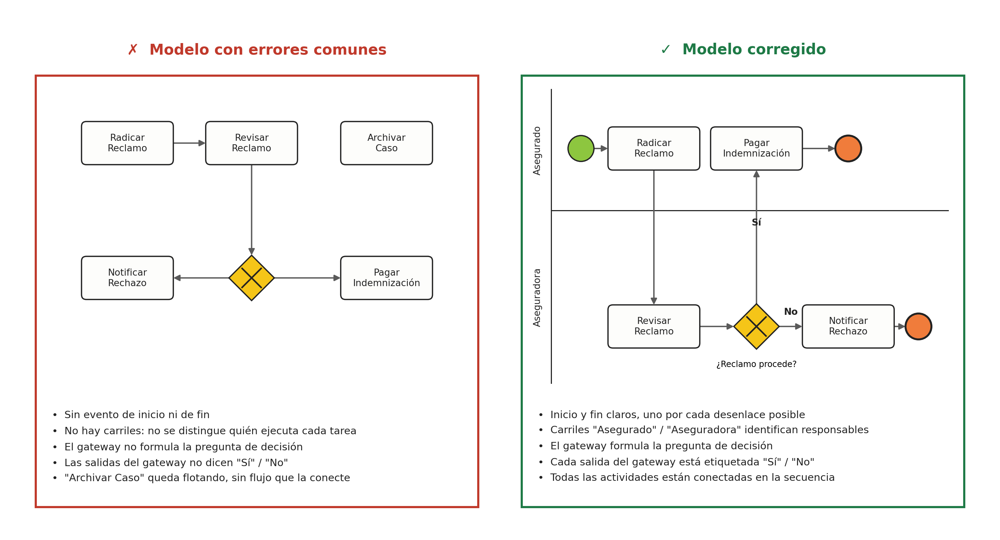

Universidad de La Sabana · Arquitectura Empresarial
Esta hoja acompaña la guía paso a paso con el resultado final del ejemplo guiado — Agendamiento de Citas Médicas de la Clínica Salud Viva — convertido en un diagrama clickeable. Seleccione cualquier tarea, evento o gateway para ver su tipo, el actor responsable y, en el caso del gateway, la pregunta de decisión con sus dos ramas.
Pool · Agendamiento de Citas Médicas
Dos carriles (lanes): Paciente arriba, Sistema de Citas abajo. El gateway exclusivo (XOR) es el único punto de decisión del proceso.
Detalle del elemento
01 · Antes de leer el diagrama
Estos son los símbolos mínimos que debe usar todo diagrama del taller. Cualquier elemento adicional (eventos intermedios, tareas de usuario/servicio, gateways paralelos, etc.) es opcional y solo se recomienda si el proceso realmente lo necesita.

02 · El método
Siga siempre este orden. No empiece dibujando flechas: empiece identificando quién participa.
Liste las personas, roles o sistemas que participan en el proceso. Cada uno será un carril (lane) dentro del pool.
Determine qué dispara el proceso (evento de inicio) y cuáles son sus posibles desenlaces (uno o varios eventos de fin).
Anote, en orden aproximado, las tareas que cada actor ejecuta. En esta etapa aún no se conectan con flechas.
Identifique los puntos donde el flujo puede tomar más de un camino y formule la pregunta de decisión de cada uno.
Una todos los elementos con flujos de secuencia, etiquete las salidas de cada gateway ("Sí"/"No" u otras condiciones) y revise que no queden actividades sueltas ni caminos sin evento de fin.
Aplicado al caso base: actores → Paciente y Sistema de Citas · inicio → "Paciente decide agendar cita" · fines → "Cita Confirmada" y "Sin Disponibilidad" · gateway → "¿Hay disponibilidad?". Es exactamente lo que muestra el diagrama de arriba.
03 · Antes de entregar
Son los errores que con más frecuencia bajan puntos en el criterio "Claridad del diagrama BPMN" de la rúbrica. Compare siempre su modelo contra esta tabla y contra la comparación visual antes de subir el archivo.
| Error común | Cómo corregirlo |
|---|---|
| Falta un evento de fin en algún camino | Recorra cada rama del diagrama, incluidas las salidas de gateways, y verifique que todas terminen en un evento de fin explícito. |
| Gateway sin pregunta de decisión | Todo gateway debe llevar la pregunta escrita (ej. "¿Hay disponibilidad?"), no solo el símbolo del rombo. |
| Actividades sin conectar (elementos flotantes) | Cada tarea, evento o gateway debe tener al menos un flujo de secuencia de entrada y uno de salida. |
| Carriles (lanes) ausentes o actores mezclados | Cada actor identificado en el Paso 1 debe tener su propio carril; una actividad vive en el carril de quien la ejecuta. |
| Salidas de un gateway sin etiquetar | Cada rama que sale de un gateway exclusivo debe llevar su condición ("Sí"/"No" u otra explícita). |
| Nombres de actividad sin verbo de acción | Use verbos claros (ej. "Consultar Disponibilidad") y no sustantivos sueltos (ej. "Disponibilidad"). |
